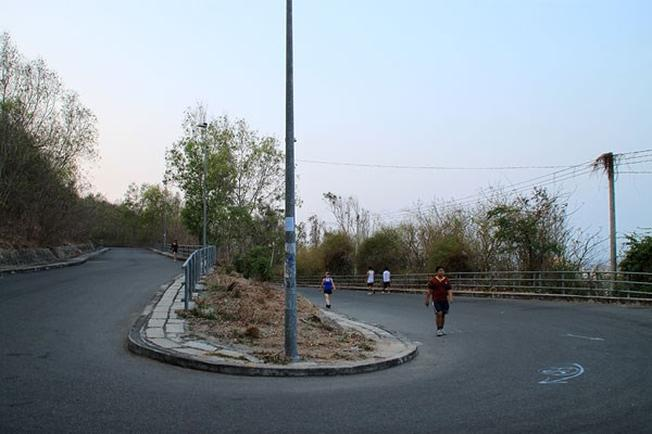

Khám phá ngọn hải đăng – Địa điểm thăm quan thú vị ở Vũng Tàu
Vũng Tàu là một vùng đất nổi tiếng với những bãi biển trải dài miên man, những ngọn núi hùng vĩ, nên thơ cùng những góc phố bình yên đến lạ. Và nếu bạn muốn được thưởng thức trọn vẹn vẻ đẹp ấy thì chắc chắn bạn phải đến với Ngọn Hải Đăng Vũng Tàu.
Địa chỉ: Nằm trên đỉnh núi Nhỏ (hay có tên gọi là núi Tao Phùng), thuộc phường 2, thành phố Vũng Tàu, tỉnh Bà Rịa – Vũng Tàu, Việt Nam Giá vé tham quan: Miễn phíNgọn hải đăng Vũng Tàu – điểm thăm quan Vũng Tàu hấp dẫn (Ảnh sưu tầm)
1. Đường đến Ngọn Hải Đăng Vũng Tàu đi thế nào?
-
Xuất phát từ thành phố Vũng Tàu men theo con đường Ba Mươi Tháng Tư, sau đó đi vào đường Phạm Hồng Thái
tới cuối rẽ trái vào đường Lê Lợi. Đến ngã ba Lê Lợi, chúng ta rẽ phải vào đường Hoàng Diệu. Đến cuối đường
tiếp tục rẽ trái tới công viên Bãi Trước.
Ngọn hải đăng Vũng Tàu – điểm thăm quan Vũng Tàu hấp dẫn (Ảnh sưu tầm)
Sau khi rẽ phải từ đường biển Hạ Long, đoạn gần đối diện bến tàu Cánh Ngầm đường băt đầu rộng dần ra. Du khách có thể đi xe thẳng lên hải đăng, tuy nhiên đi bộ men theo triền núi vẫn được rất nhiều du khách lựa chọn để ngắm cảnh xinh đẹp của thành phố biển từ trên cao.
Từ ngọn hải đăng, du khách có thể nhìn toàn thành phố Vũng Tàu (Ảnh sưu tầm)
-
Khi đến địa điểm du lịch Vũng Tàu này, để chiêm ngưỡng công trình kiến trúc đặc sắc của ngọn hải đăng cổ,
du khách có thể đi xe máy hoặc ô tô. Tuy nhiên, cũng có nhiều du khách lựa chọn tản bộ để cảm nhận chút
phiêu lưu thử thách, hít thở không khí mát mẻ và thưởng ngoạn phong cảnh đẹp nên thơ một cách trọn vẹn nhất.

Nhiều người chọn cách chạy bộ, vừa ngắm cảnh vừa tập thể dục để lên đến ngọn hải đăng (Ảnh sưu tầm)
-
Nhưng có lẽ cảm giác tuyệt nhất là khi du khách đi qua vườn sứ hàng chục năm tuổi trổ bông thơm ngát dọc
lối đi lên ngọn hải đăng tại địa điểm du lịch này, mọi cảm giác mệt mỏi của bạn dường như được xua tan.
Đặt chân đến đỉnh núi, bạn sẽ được ngắm trọn vẹn cảnh non nước, chiêm ngưỡng ngọn hải đăng sừng sững,
uy nghiêm trong màu trắng muốt vươn cao giữa nền trời xanh thẫm hay nhìn tượng chúa Giêsu dang tay ở cách đó không xa.
Vẻ đẹp của ngọn hải đăng Vũng Tàu lúc về đêm (Ảnh sưu tầm)
2. Vậy tại ngọn hải đăng Vũng Tàu có những góc chụp ảnh nào đẹp?
-
Chụp cùng với ngọn hải đăng là một trong những khung cảnh được nhiều du khách lựa chọn. Với vẻ đẹp cổ kính,
tinh tế của lớp sơn màu trắng làm cho ngọn hải đăng hiện ra trông thật hùng vĩ và to lớn. Một nơi ngắm cảnh và check-in vô cùng lý tưởng.
Hình ảnh đẹp khi chụp cùng với ngọn hải đăng (Ảnh sưu tầm)
-
Chụp ảnh cùng với ngọn đèn hải đăng là một trong những ý tưởng vô cùng tuyệt vời của những bạn trẻ. Ánh sáng của ngọn đèn
tọa cho khung cảnh trở nên lãng mạng hơn. Khi đứng ngoài lan can trên hải đăng không chỉ được hóng mát từ gió biển mà chúng
ta có thể thấy được toàn cảnh Vũng Tàu vô cùng yên tĩnh, thanh bình.
Khung cảnh đẹp và lãng mạng tại ngọn hải đăng Vũng Tàu (Ảnh sưu tầm)
-
Mở hết tầm mắt chúng ta còn được chiêm ngưỡng Tượng Chúa GiêSu KiTô Vua và núi Minh Đạm vô cùng hoành tráng và ấn tượng.
Bãi tắm hình lưỡi liềm bên với làn nước trong xanh cũng là một trong những góc chụp đẹp đê bạn tham khảo. Đặc biệt là vườn hoa
sứ xinh đẹp vừa tô điểm vừa tôn thêm nét đẹp kiến trúc và sự vững chãi của ngọn hải đăng.
Đứng trên ngọn hải đăng có thể trông thấy Tượng Chúa GiêSu KiTô (Ảnh sưu tầm)
Tin liên quan: Tượng Chúa Kitô Vua(Tượng Chúa Kitô trên đỉnh Núi Tao Phùng)
Tìm kiếm Tour